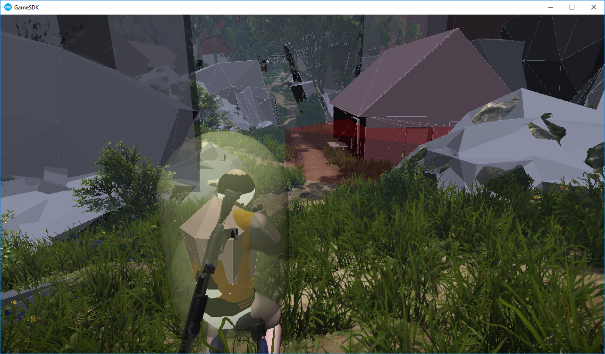
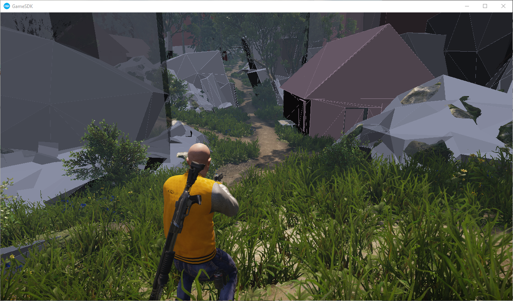
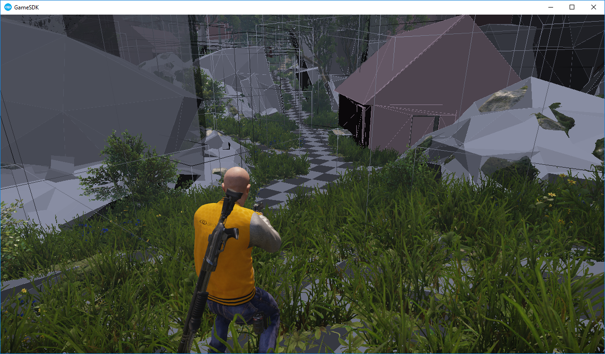
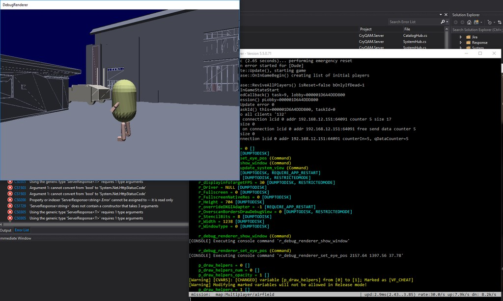

Overview
This article aims to showcase a set of common utilities that can be used to debug and profile game behavior with relative ease, resulting in a visual representation of the game world.
Table of Contents
Profiling
The engine exposes several tools to measure performance impact:
Graphics Performance
For a simple view of current frame performance, enter "r_Profiler 1" into the console, resulting in the view below:

You can specify a target FPS (r_profilerTargetFPS 30), to align the tool to measure against. Default is 30.
This overview gives information on what the Main thread (CPU), Render thread (CPU) and GPU is doing - allowing a good insight into what the current bottleneck is for your title.
In addition, "r_Profiler 2" can be enabled to get much more detailed information, giving information on what exactly is causing issues in your scene:

More detailed graphics profiling and debugging can be measured using the Renderdoc tool described here.
Load time
The boot profiler allows for profiling time it takes to start the engine, as well as profiling the loading time of levels. For more information, see Loadtime Profiling.
Memory usage
The MemReplay tool allows for tracking memory usage within the engine, in order to find memory usage issues and leaks. For more information, see Memory Profiling.
CPU Performance
CRYENGINE exposes several helpers that track the timing of critical functions in the engine.
To see more detailed profiling stats, use the external Brofiler profiling tool referenced in Performance Profiling.
Drawing Physics Helpers
It is often useful to view the visual state of the physical world, in order to resolve gameplay issues relating to physics. This can be achieved using the p_draw_helpers CVar. This value can be set to 1 in order to draw the most common physical types:

Otherwise, more fine grained tweaking can be accomplishing by combining physical entity types with helper types as follows:
p_draw_helpers [Entity Types]_[Helper types]For example, we can use:
p_draw_helpers s_gThis results in only static geometry being drawn:

Multiple types can be used at the same time, for example:
p_draw_helpers st_gbWill only draw static and terrain entity types, and display their geometry as well as bounding boxes:

See the full list of types below:
Entity Types
| Name | Letter |
|---|---|
| Terrain | t |
| Static (PE_STATIC) | s |
| Sleeping Rigid (PE_RIGID) | r |
| Active Rigid (PE_RIGID) | R |
| Living / Humanoid (PE_LIVING) | l |
| Independent (PE_INDEPENDENT) | i |
| Triggers | g |
| Areas (PE_AREA) | a |
| Rays invoked via RayWorldIntersection | y |
| Explosion Occlusion Maps | e |
Helper Types
| Name | Letter |
|---|---|
| Geometry | g |
| Contact Points | c |
| Bounding Boxes | b |
| Tetrahedra Lattices for breakable objects | l |
| Show structural joints | j |
Visualizing the Dedicated Server's physical state
It can often be very useful to see what is going on inside the dedicated server. This can be achieved by running the r_debug_renderer_show_window command, and then r_debug_renderer_set_eye_pos <X> <Y> <Z>. This will bring up a window where auxiliary rendering will be output. This is mostly useful for physics, as we can afterwards enter p_draw_helpers 1 - giving the view below where we can see the state of the server world:

Drawing Debug Helpers per Frame
The renderer exposes the IRenderAuxGeom interface to support drawing rudimentary geometry, most commonly for debug purposes. Drawing using the auxiliary renderer is quite simple, and requires first calling IRenderAuxGeom::SetRenderFlags in order to set the rendering state - and then invoking one or more of the IRenderAuxGeom::Draw* functions, seen in the API reference.
For example:
// Restore to default rendering state
gEnv->pRenderer->GetIRenderAuxGeom()->SetRenderFlags(SAuxGeomRenderFlags());
// Draw a red sphere at the specified position
gEnv->pRenderer->GetIRenderAuxGeom()->DrawSphere(worldPosition, radius, ColorB(255, 0, 0, 255));Note that auxiliary geometry has to be rendered every frame in order to be rendered persistently. If you're in need of a "fire and forget" style of persistent debug, see the section below.
Drawing Persistent Debug Helpers
The IPersistantDebug interface can be used to draw debug helpers persistently, specifying a time out and having them drawn until the timer expires.
Before drawing can occur, we have to call the IPersistantDebug::Begin function, after which we can call any number of the IPersistantDebug::Add* functions. For example to draw a red sphere for 60 seconds:
gEnv->pGameFramework->GetIPersistantDebug()->Begin("myDebug", false);
gEnv->pGameFramework->GetIPersistantDebug()->AddSphere(worldPosition, radius, ColorB(255, 0, 0, 255), 60.f);Related CVars
sys_perfhud
Opens a UI panel that provides easy access to profiling and debugging tools. This is particularly useful for consoles, where the Engine console and key inputs are typically not easily accessible.
Usage: sys_perfhud [0/1/2]
0: Off.
1: In focus (cursor control).
2: Out of focus (no cursor control).
The options of the perf hud UI can vary depending on the project and/or loaded Engine modules; projects such as GameSDK, for example, may have more options than the Blank Template.
Conclusion
This concludes the article on Debugging Utilities, you may be interested in: